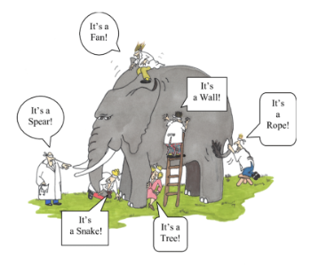

Independent Novel Analysis Guidelines and Literary Theories Run Through: Text-Based Theories
At this point in our course, our roles will be reversed. This time, it is you who will teach your teacher about the novel that you chose in Unit 1. It is expected that you have gone through most of the novel, if not finished it.
So, what are you going to do?
|
Let’s review the PACTS and identify the PACTS in the novel you chose.

PLOT
- The plot is the events that make up the story, it is the combination of the plot points of the story (events or scenes in the story).
- The plot points in the story are intentional, and must connect together to lead the story to where it is going.

The plot is made up of 5 parts:
- Exposition
- Rising Action
- Climax
- Falling Action
- Resolution
Exposition
- The exposition is the introduction of the story. This is where the characters are introduced, and where the setting is established.
- The primary conflict of the story is also introduced in the exposition.

Rising Action
- This is the part of the plot that sets the story in motion.
- These are moments of conflict that escalate further until the story reaches its peak (climax).

Climax
- This is where the tension reaches its highest point. It is the peak of the plot.
- The climax is the point where the story with the biggest change, where the protagonist is forced into a life-changing decision.
- It should be a point where the reader is unsure of what happens next in the story.

Falling Action
- This happens after the climax. This is where the subplots of the story are resolved. In the falling action, the story slows down.
- Any conflict that started due to the climax is resolved in the falling action.

Resolution
- The resolution is the end of the story. It is where the conflict of the story is resolved.
- An example of this is a cliffhanger. It is a common literary device used to end a story with suspense.

PLOT - CONFLICT
|
Characters in stories undergo conflicts with various “forces” such as:
|
In the past few days, did you experience any conflict? What kind of conflict was it?
PLOT
Guide Questions:
What is the basic story line? inciting events? climax? falling action? What is the nature of the conflict -- person v person? person v self? person v society? person v nature?
ATMOSPHERE
The ATMOSPHERE is the feeling, emotion, or mood that is being conveyed by the story, such as:

ATMOSPHERE
Guide Questions:
What is the dominant mood of the story? Does it change? How does the mood influence the theme?
Characterization
|
It is the method on how readers get to know a character Characterization occurs any time the author uses details to teach us about a character. Characterization is done through what the characters say, their actions, and what other characters say about them. There are two ways the author can do this: through direct and indirect characterization. Direct characterizations are explicit descriptions about a character, while indirect characterizations are descriptions about a character that isn’t explicitly described. |

For example:
Direct characterization:
John is a very nice person
Indirect characterization:
John used his free time to help the needy at the shelter. He also donates food and clothes every month.

CHARACTERS
| Characters perform the actions and speak the dialogue throughout the story. These can be people, animals, things, or beings who think, feel, and act. |
Characters can be:
- A protagonist or an antagonist
- Flat or round
- Static or dynamic

CHARACTER TYPES
| Protagonist | Antagonist |
|
|


Flat-
relatively uncomplicated, does not change throughout the story.
Round -
complex and undergoes development, detailed.
Static-
stays the same throughout the story.
Dynamic-
undergoes significant internal change as the story progresses.
CHARACTERIZATION
|
Characterization is how an author helps us "know the character," just like how we get to know a person in real life. As we read through the story, more and more details about the characters are exposed through their actions and dialogues. Details such as the characters' backgrounds, inspirations, motivations, and other information are revealed as we progress through the story. Aside from the ones mentioned, can you share other possible details that can be revealed from the characters? |
CHARACTERIZATION
Guide Questions:
Who is the protagonist? Antagonist? Are the characters well-rounded or flat?
THEME
|
The theme is the underlying message of the story. It is also considered as the main idea that the author is trying to relay.
|


Topic, Theme, or Moral?
TOPIC
The topic tells us what a story is about. An example of a topic is LOVE.
THEME
The theme reveals something about the topic. If the topic is LOVE, the theme could be “Love is Generous.”
MORAL
The moral is what you learn from the story. One example is that “when you love, you do things for the person without asking for something in return.”
THEME
Guide Questions:
What is the main idea of the story? What is the author trying to show us?
SETTING
|
The setting talks about the time when and the place where the story happens, and has an effect on the story’s theme and atmosphere.
|

SETTING
Guide Questions:
Where and when does the story take place? How does this affect the theme, characters, plot or atmosphere?
Now that you've finished the PACTS for your chosen novel, let's proceed to literary theories discussion.

|
There is an Indian parable that talks about six blind men and an elephant. All of them examined the elephant by touching its different parts and tried to describe the animal to the other:
Each believed that he knew just how the animal looked, and they called each other hard names because they disagreed with him. The elephant moved on, leaving the six blind men quarrelling all day. |
Were any of them wrong in describing the elephant?
If you think about it, all of them provided different observations depending on the part they touched.
This is like Literary Theories, but instead of using the sense of touch, we will use different lenses to describe a piece of literature.
Of course, we will also avoid fighting.
What is Literary Theory, and why is it important?
|
A literary theory describes different approaches to studying literature. Essentially, literary theories are lenses that a reader can apply to view a text in a new light. It guides us in determining which part of the text we should pay attention to. There are multiple literary theories, but we can group them generally like so: |
MEANING
- New Criticism
- Archetypal
Biographical and Psychological
Feminist, Marxist, Historical/Hermeneutical, Moral/Didactic, Freudian/Psychoanalytic
Reader Response
Let’s explore each theory some more.
We’ll sample the theories using two known stories: “Metamorphosis” and “The Fall.”
Text-based theories
| focus on the text and avoid influence from outside meaning. |
New Criticism
also called formalism,
it views each piece of literature that possesses all of its meaning inside the text.
It also focuses on analyzing irony, paradox, imagery, and metaphor.
Example of formalism or new criticism approach in the story, Metamorphosis by Franz Kafka:
A man named Gregor Samsa is suddenly transformed into a bug. His “abrupt and unexplained transformation is juxtaposed with a lot of really mundane day-to-day details.” From a close reading, one can get a glimpse of the loneliness that Gregor feels daily, and the transformation could be a literal manifestation of Gregor’s alienation from society.
Archetypal
assumes that there is a collection of symbols, images, characters, and motifs (i.e. archetypes) that evokes the same response in all people.
Example of archetypal approach in the story:
Gregor Samsa’s strange transformation is a sample of The Fall archetype, which signifies a break in the previous order of the world or the divide between the past and the present.